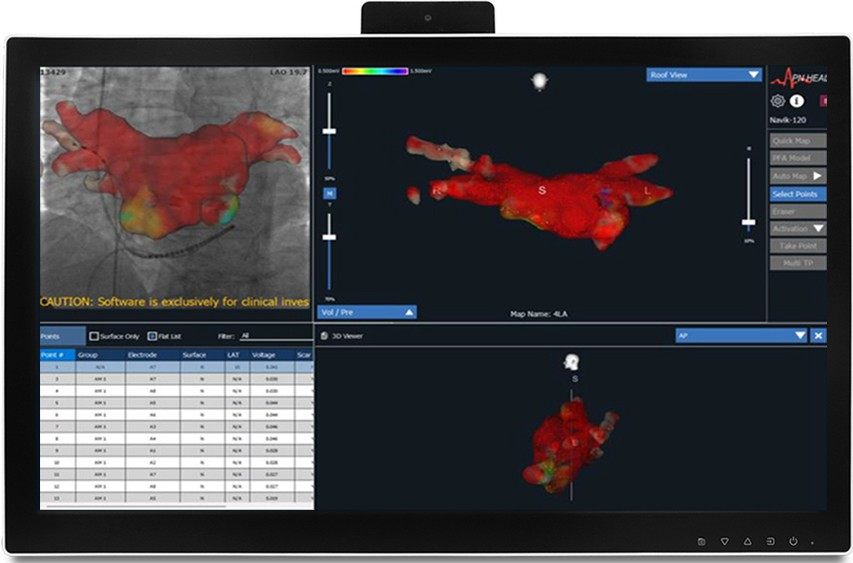
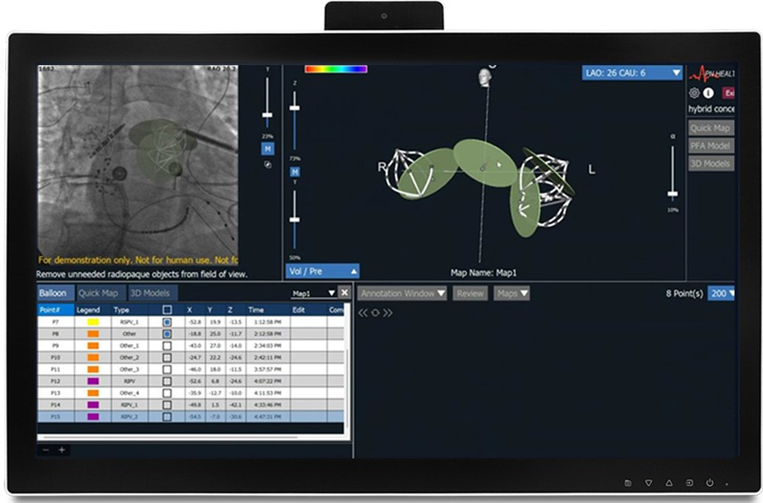
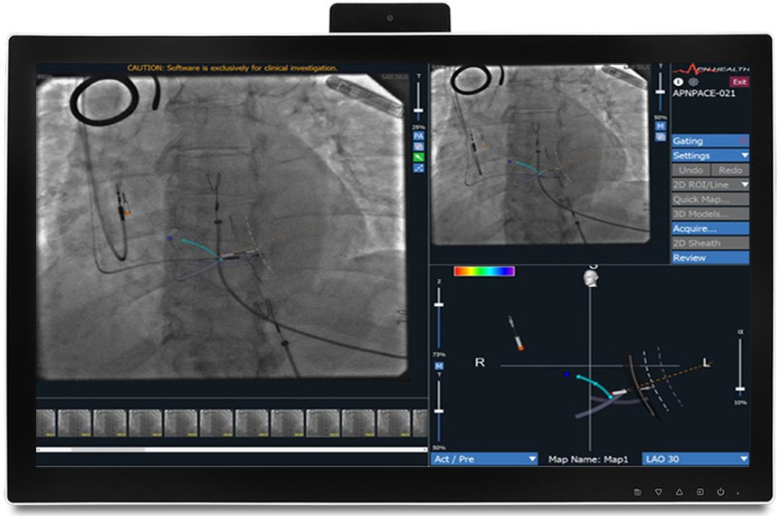

Innovative 3D cardiac Maping
Using Single-Plane Fluoroscopy
Navik 3D

Navik 3D - Real Time
3D Mapping with Impedance
Compensation
and Overlay with 2D+3D
Time Impedance

Navik 3D Image Guidance -
3D Anatomical Mapping with 2D Fluoro
and Overlay
PFA Electrodes
Disc rendering
20 positions of PFA Catheters

Navik 3D Image Guidance - AV Mapping for Conduction System Pacing
and Overlay
PFA Electrodes
Septal Wall
